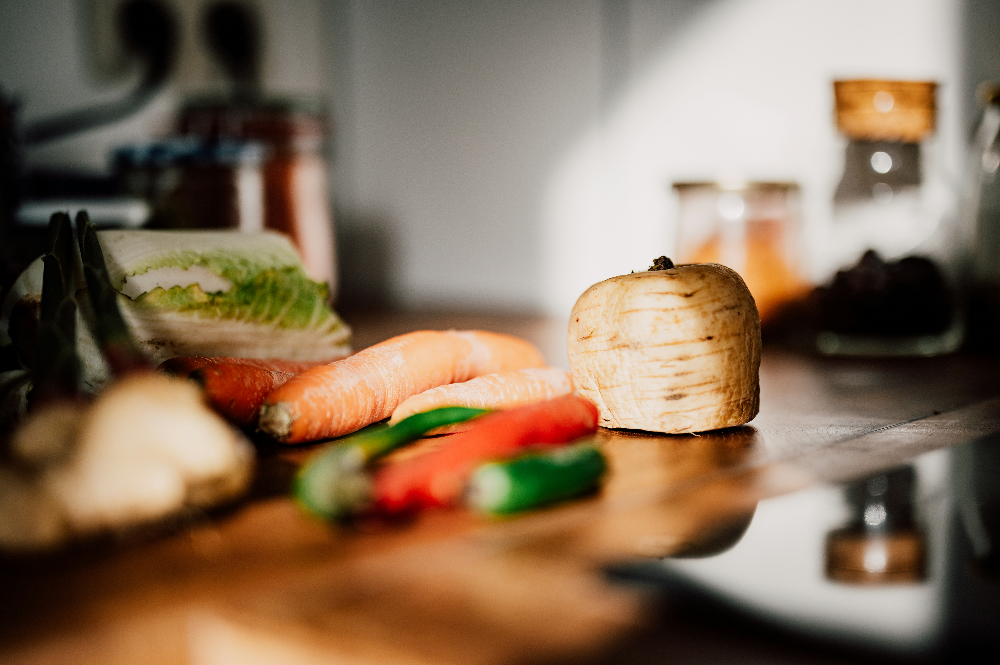

Nem Madlavning
Nemme Retter til Aftensmad: Spar Tid og Penge med Disse Lækre Opskrifter
Er du ny i det selvstændige voksenliv og leder efter nemme retter, der ikke kræver, at du er mesterkok for at imponere? Fortvivl ikke! Her hos ‘Ung & Uafhængig’ har vi samlet de bedste nemme retter, der passer perfekt til din travle studenterhverdag i Aarhus. Vores nemme og billige opskrifter er skræddersyet til dig, der ønsker at nyde lækker, hjemmelavet aftensmad uden at sprænge budgettet
Forstå Fordelene ved Nemme Aftensmadsopskrifter
Nemme retter til aftensmad er ikke blot hurtige at lave; de er også ideelle for at styre dit budget og holde dig mæt og tilfreds. Ved at inkludere ingredienser som hakket oksekød, kylling og andre overkommelige råvarer kan du sammensætte måltider, der føles luksuriøse uden at være det. Disse retter er perfekte til en ung studerende som dig, der måske også har en roommate at dele madomkostningerne med.


Kylling og Grøntsager i Fad
En nem ret med kylling, der kræver minimal forberedelse. Kast kyllingestykker, dine yndlingsgrøntsager, lidt olie, og dine favoritkrydderier sammen i et fad, og bag det i ovnen.
Hakket Oksekød Taco Skillet
Dette er en af de mest populære nemme retter med hakket oksekød. Alt hvad du skal gøre, er at stege kødet, tilføje taco-krydderier og lidt vand, og så er du klar til en taco-aften!
Pasta med Tomatsauce
Nemme opskrifter på mad behøver ikke være komplicerede. En simpel pastaret med en hjemmelavet tomatsauce kan være både nærende og velsmagende.